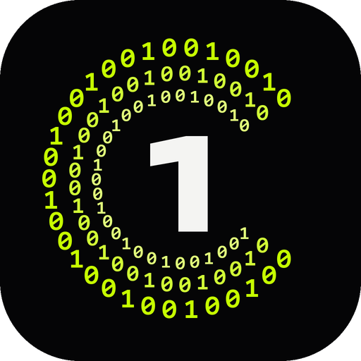

C1PH0N1C
Яндекс Музыка для Windows. Музыка в нулях и единицах — и ничего лишнего.
Windows 10 и 11 | бесплатно | открытый код
> моя волна
Бесконечный поток
под тебя
Учится на каждом лайке и пропуске. Настрой её одним свайпом — или включи волну по треку, артисту, альбому.
- like | не рекомендовать | волна по треку
- mood | бодрое, спокойное, грустное, весёлое
- tune | характер, язык, волны под занятие
- feed | подборки, чарт, новые релизы, недавнее
> голос --off
Караоке
из любого трека
Нейросеть Kim Vocal 2 отделяет вокал прямо на твоём компьютере — быстрее, чем играет трек. Двигай ползунок, и певец уходит.
голос [██████████] 100%
> текст --sync
Поётся — заливается
ноль и один идут по кругу
бас открывает этот шифр
и каждый трек звучит как ключ
к тому, что ты давно забыл
Строка заливается по ходу слов. Нет текста у Яндекса — найдётся в LRCLIB.
> speed 0.8 --reverb
Найткор. Slowed.
Reverb.
Скорость от 0,5× до 2× вместе с тоном, эхо большого зала и эквалайзер на 10 полос. Меняется на лету.
> viz --binary
Обложка из 0 и 1
Визуализатор на видеокарте пишет обложку символами и дышит басом. Он сейчас у тебя за спиной — переключи фон.
> ls ./features
И всё остальное
- devices | что играет на телефоне, пульт и «подхватить здесь»
- artist | фото, описание, концерты, дискография, соцсети
- clips | клипы на YouTube в один клик
- idle | режим покоя на весь экран с часами
- calm | без вспышек — для тех, кому они вредны
- keys | медиаклавиши, панель Windows, громкость колесом
- audio | lossless, наушники подхватываются на лету
> install
Три шага
- Скачай архив
C1PH0N1C-…-windows-x64.zipи распакуй в любую папку. - Запусти
ciphonic.exe. Windows может сказать «защитила ваш компьютер» — «Подробнее» → «Выполнить в любом случае»: программа не подписана. - Войди через Яндекс ID. Для музыки нужна подписка Плюс.
Неофициальный клиент, не связан с Яндексом. Код открыт, лицензия MIT. GitHub | сообщить об ошибке